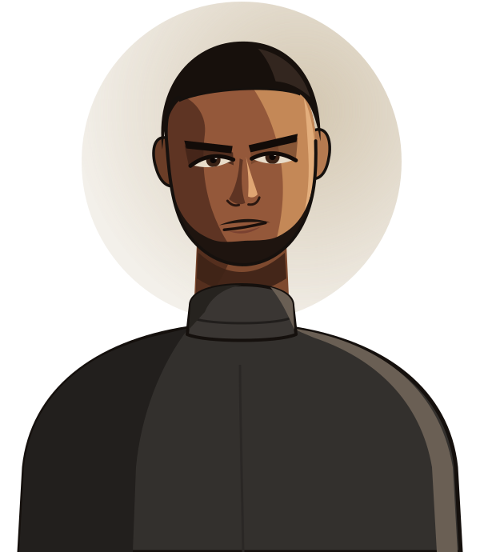

I teach children to build with computers, and I build the software they learn with.
Computer educator
Founder, Promethic
Freelance web developer
Hello.
I'm Cwenga, a computer educator and independent developer. I teach Grades R to 7 at Victoria Park Grey Primary, and run the school's coding and robotics extramural.
I design and develop educational apps under Promethic, my own company, and build websites for small businesses in my city.
I believe deeply in the idea that people learn best when they feel seen. That idea shapes the classroom I run and the software I make.
- Education
- BEd, cum laude, Nelson Mandela University
- Teaching
- Victoria Park Grey Primary, Walmer
- Company
- Promethic
- Approach
- Humanising pedagogy, build first
- Toolkit
- HTML, CSS, JavaScript, Firebase, Android (Java), MakeCode
Selected work
Apps, sites and classroom tools. Most of it was built for people I know: learners, colleagues, and businesses down the road.
Let's
talk.
- cwenga@promethic.co.za
- Elsewhere
- Based in
- Port Elizabeth,
South Africa - Open to freelance web and app work.